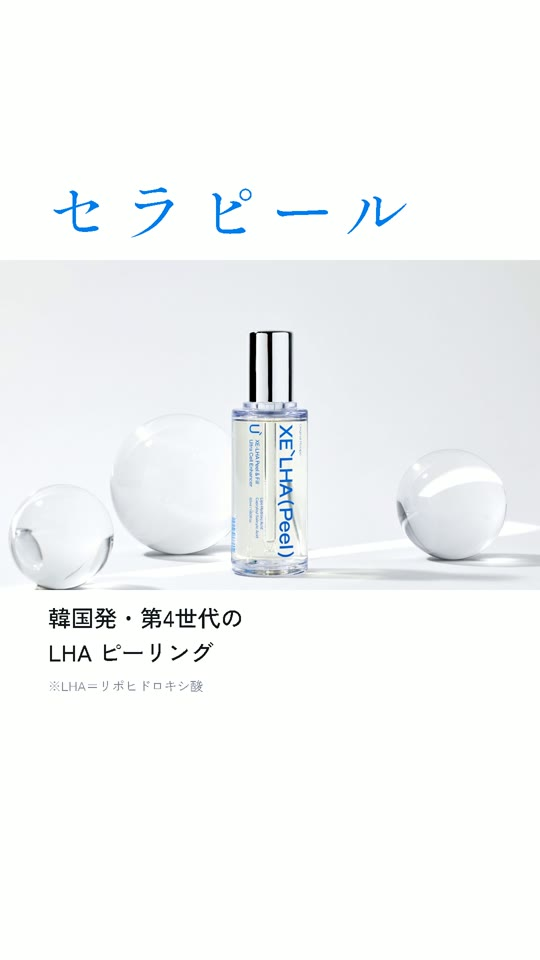
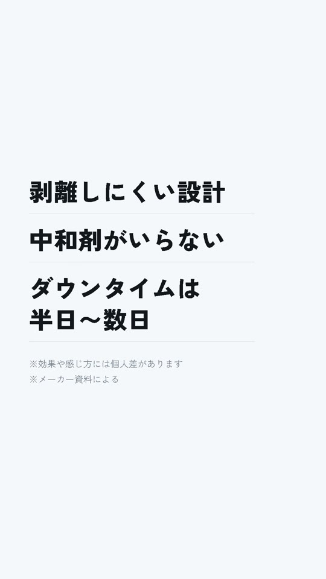
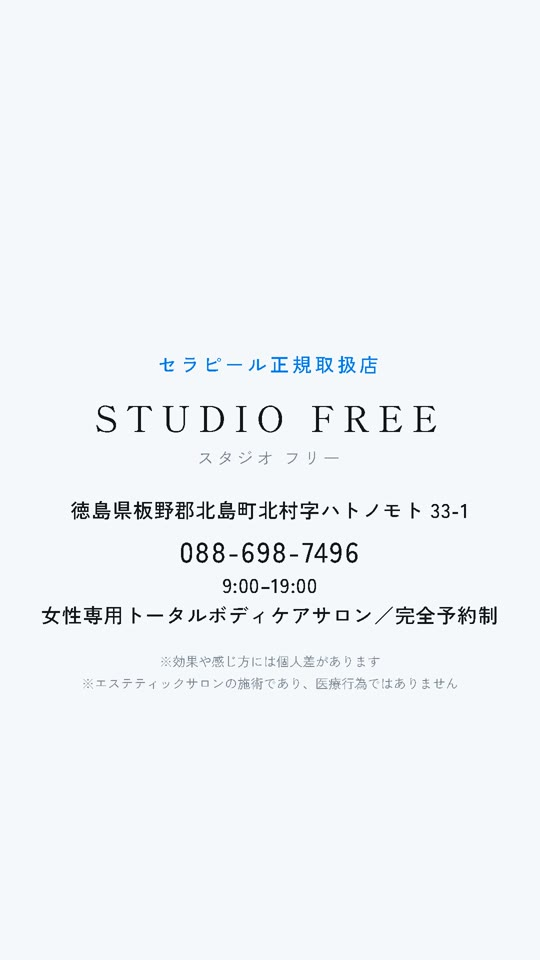

WORK DETAIL / 04
STUDIO FREEAD REEL
動画の中の商品写真と受賞メダルは、メーカーの資料を使っています。
01 / OVERVIEW
何を作ったか
徳島県北島町の、女性専用トータルボディケアサロンの広告動画です。お店が肌のピーリング「セラピール」の正規取扱店であることを知らせる、Instagram・TikTok 用の縦型広告として作りました。
02 / APPROACH
工夫したこと
効果を約束しない言い回しで組みました。最後の3.5秒は動きを止めて、住所と電話番号をスクリーンショットで残せるようにしています。
CUTS
動画の中の3つの場面


